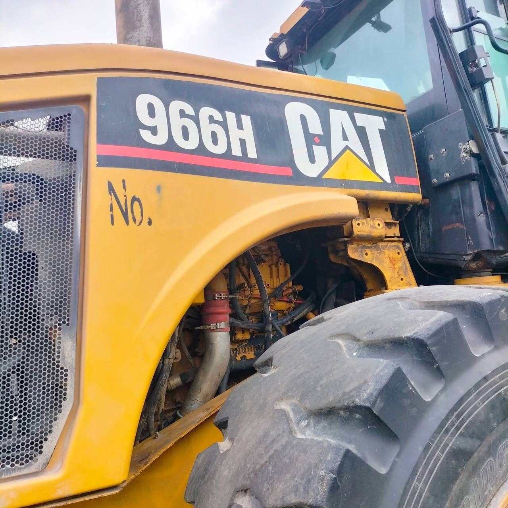

ตรวจวิเคราะห์ก่อนซ่อมทุกคัน
ตรวจอาการและสภาพรถก่อนสรุปสาเหตุ เพื่อวางแนวทางซ่อมให้เหมาะกับปัญหาที่พบ
รู้จักแพรกษาดีเซล
ก่อนตัดสินใจนำรถเข้าร้าน ดูภาพงานจริง วิธีตรวจตามอาการ และขอบเขตงานที่รับทำ เพื่อคุยกับช่างได้ตรงปัญหา

ประสบการณ์งานดีเซลกว่า 30 ปี
ตรวจอาการและสภาพรถก่อนสรุปสาเหตุ เพื่อวางแนวทางซ่อมให้เหมาะกับปัญหาที่พบ
ใช้เครื่องมือสำหรับงานระบบดีเซล ปั๊ม และหัวฉีด เพื่อช่วยตรวจสอบการทำงานของชิ้นส่วน
พิจารณารายการซ่อมจากผลตรวจ และอธิบายรายละเอียดก่อนดำเนินงาน
ตรวจสอบการทำงานและความเรียบร้อยหลังซ่อม ก่อนส่งมอบรถให้ลูกค้า
ให้บริการเจ้าของรถ อู่ซ่อม ศูนย์บริการ และลูกค้าองค์กร
เข้าใจการใช้งานรถเชิงพาณิชย์ และให้ความสำคัญกับการลดเวลาหยุดวิ่งของรถ
แจ้งชื่อ ที่อยู่ และเลขประจำตัวผู้เสียภาษีที่ต้องการใช้สำหรับออกเอกสารกับร้าน
สอบถามรายละเอียดการชำระเงินกับร้านก่อนเข้ารับบริการ
ตัวอย่างจากอัลบั้ม
ภาพเหล่านี้เป็นส่วนหนึ่งของอัลบั้มทั้งหมด 40 ภาพ



ขอบเขตงานของร้าน
แพรกษาดีเซลรับงานรถกระบะ รถยนต์ดีเซล รถบรรทุก รถบัส และเครื่องจักรดีเซล ขอบเขตงานจริงขึ้นอยู่กับรุ่นรถ สภาพชิ้นส่วน และผลตรวจ
ตรวจอาการที่อาจเกี่ยวกับการจ่ายเชื้อเพลิง เช่น สตาร์ตติดยาก กำลังตก หรือเครื่องเดินไม่เรียบ ก่อนสรุปว่าต้องซ่อมปั๊มหรือแก้ไขจุดอื่น
ตรวจสภาพหัวฉีดและผลการทำงาน เพื่อพิจารณาว่าควรทดสอบ ล้าง ซ่อม หรือเปลี่ยนชิ้นส่วนตามความเหมาะสมของงานจริง
ดูอาการร่วมกับระบบจ่ายเชื้อเพลิงและข้อมูลรถ การวิเคราะห์ปัญหาคอมมอนเรลต้องพิจารณาหลายจุด ไม่ควรตัดสินจากอาการเดียว
รับสอบถามงานเครื่องยนต์ดีเซลของรถใช้งานหลายประเภท รวมถึงรถบรรทุก รถโดยสาร และเครื่องจักร แจ้งรุ่นและอาการก่อนเข้าร้านเพื่อให้ประเมินขอบเขตงานเบื้องต้น
แนวทางก่อนเริ่มงาน
อาการรถดีเซลที่คล้ายกันอาจมีสาเหตุต่างกัน เช่น ควันดำอาจเกี่ยวข้องได้ทั้งระบบอากาศ การจ่ายเชื้อเพลิง หรือสภาพเครื่องยนต์ การส่งข้อมูลรถล่วงหน้าช่วยให้ร้านรับทราบปัญหา แต่ข้อสรุปต้องอาศัยการตรวจรถจริง
ดูขั้นตอนการซ่อมรถคำถามที่พบบ่อย
ยังสรุปไม่ได้จากอาการอย่างเดียว อาการเดียวกันอาจมาจากปั๊ม หัวฉีด ระบบจ่ายเชื้อเพลิง หรือจุดอื่นของเครื่องยนต์ ควรให้ช่างตรวจรถจริงก่อนตัดสินใจซ่อมหรือเปลี่ยนอะไหล่
แจ้งรุ่นรถ ปีรถ และอาการเพื่อสอบถามขอบเขตงานเบื้องต้นได้ แต่ราคาและรายการซ่อมที่ชัดเจนต้องดูสภาพรถและผลตรวจ ก่อนตกลงดำเนินงาน
ร้านรับสอบถามงานรถดีเซลหลายประเภท ส่งรุ่นเครื่องยนต์และภาพจุดที่มีปัญหามาก่อน เพื่อให้ร้านดูขอบเขตงานและแจ้งวิธีนัดเข้าตรวจที่เหมาะสม
เตรียมยี่ห้อ รุ่น ปีรถ อาการที่พบ ช่วงเวลาที่เกิดอาการ และประวัติซ่อมล่าสุด หากมีไฟเตือนขึ้น ให้ถ่ายรูปหน้าปัดไว้ประกอบการพูดคุย
ก่อนนำรถเข้าร้าน
ส่งยี่ห้อ รุ่น ปีรถ อาการที่พบ และรูปไฟเตือนทาง LINE หรือโทรสอบถามก่อนนัดหมาย
เวลาทำการ: เปิดทุกวัน 08:00–21:00 น. (ไม่มีวันหยุด)